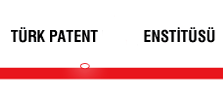
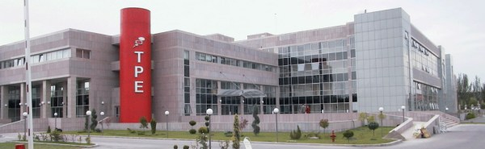
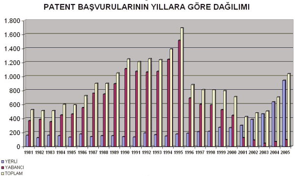
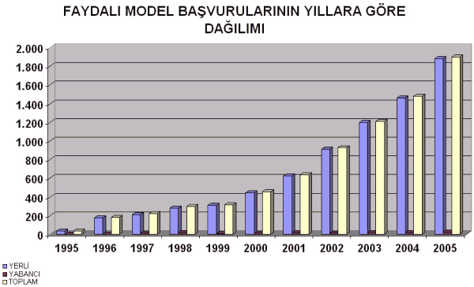
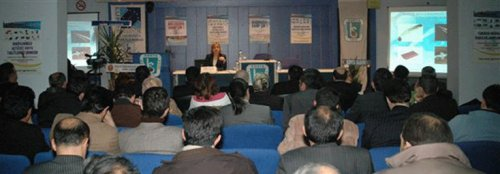
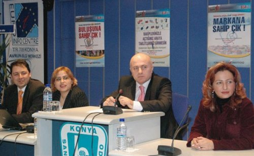
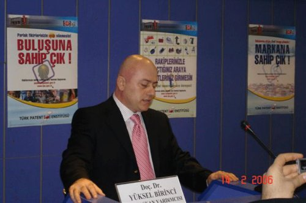
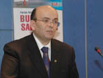

|
Türk
Patent Enstitüsü Baþkan Yardýmcýsý Doç. Dr. Yüksel Birinci,
konuyla ilgili olarak 2004 yýlýnda aþaðýdaki iþbirliði duyurusunu
yapmýþtý;
Türk Patent Enstitüsü olarak; yerli ve yabancý yatýrýmlarýn
teþvik edilmesi, sanayileþme, kalkýnma ve küresel rekabet
gücünün artýrýlmasý yolundaki belki de en önemli araçlardan
biri olan sýnai mülkiyet haklarýmýzý koruma bilincini yaygýnlaþtýrma
amacýyla; Türkiye genelinde baþlattýðýmýz "Sýnai Mülkiyet
Haklarý Bilinçlendirme Kampanyasý" ile ilgili çalýþmalarýmýz
tüm hýzýyla sürmektedir.

Söz
konusu kampanyanýn en önemli ayaklarýndan birini de bilim
adamlarýmýzýn çalýþtýðý ve yetiþtirildiði üniversitelerimize
yönelik seminerler oluþturacaktýr. Söz konusu seminerlerden
öðretim üyelerinin ve öðrencilerin maksimum seviyede faydalanabilmeleri
için dünyadaki teknik dokümanlarýn %80'ini oluþturan
patent dokümanlarýna, patent veri tabanlarý vasýtasýyla internet
üzerinden nasýl ulaþýlabileceði detaylý bir þekilde açýklanacak
olup, böylece katýlýmcýlarýn kendi konularýndaki en son teknolojiye
kolayca ulaþabilmelerinin saðlanmasý hedeflenmektedir. Ayrýca
patent, endüstriyel tasarým tescili ve marka tescili
konusunda genel bilgiler de seminer programýnýn kapsamýnda
olup bu konularda özellikle mezun olduktan sonra ülkemizin
potansiyelini oluþturacak olan öðrencilerin genel seviyede
bilgi edinmelerinin ülkemiz ekonomisi açýsýndan büyük önem
taþýdýðý inancýndayýz.


Söz
konusu kampanya süresince tarafýnýzdan verilecek destek ve
iþbirliði sayesinde oluþturabileceðiniz güçlü sinerji ile
çalýþmalarýmýzýn çok daha etkili olacaðýnýn bilincindeyiz.
Sizlerin de Enstitümüzün baþlatmýþ olduðu bu kampanyanýn daha
fazla ses getirebilmesi adýna katkýlarýnýzý esirgemeyerek;
güzel ülkemizin çaðdaþlaþmasý yolunda bizlerle yakýn iþbirliði
içinde olacaðýnýza inanýyoruz.
Bu
kampanya kapsamýndaki seminerler aþaðýda listelenmiþtir;
|
Tarih
|
Seminer
|
Yer
|
| 13.Nis.2006 |
PATENT,
PATENT VERÝTABANLARI |
Atatürk
Üniversitesi, ERZURUM |
| 12.Nis.2006 |
REKABETTE
YENÝ BOYUT: SINAÝ MÜLKÝYET HAKLARI |
HACETTEPE
ÜNÝV. ANKARA |
|
30.Mar.2006
|
Patent
Haklarý ve Patent Alým Süreçleri |
Dokuz
Eylül Üniversitesi Saðlýk Bilimleri Enstitüsü |
|
20.Mar.2006
|
Patent,
Marka ve Tasarým |
Ýstanbul
Kuyumcular Odasý
Çemberlitaþ, Ýstanbul |
|
16.Mar.2006
|
Patent,
Marka ve Tasarým |
Mersin
Ticaret ve Sanayi Odasý |
|
07.Mar.2006
|
Patent,
Marka ve Tasarým |
Konya
Selçuk Üniversitesi |
|
14.Þub.2006
|
Patent
Marka ve Tasarým |
Konya
Sanayi Odasý |
|
31.Oca.2006
|
Rekabette
Yeni Boyut: Patent, Marka, Tasarým |
OSTÝM,
Ankara |
|
20.Oca.2006
|
Patent
Marka ve Tasarým |
Yalova
KOSGEB Sinerji Odaðý |

TPE
ve Konya Sanayi Odasý Ýþbirliði ile düzenlenen "Rekabette
Yeni Boyut: Patent, Marka, Tasarým" Konulu Seminer 14
Þubat 2006 tarihinde, 100'e yakýn katýlýmcý ile Konya Sanayi
Odasý Konferans Salonu'nda gerçekleþtirildi. Seminer, Türk
Patent Enstitüsü Baþkan Yardýmcýsý Doç. Dr. Yüksel BÝRÝNCÝ
ve Konya Sanayi Odasý Yönetim Kurulu Üyesi Mehmet ÇOLAK'
ýn açýlýþ konuþmalarý ile baþladý.

Doç.
Dr. Yüksel BÝRÝNCÝ, yaptýðý açýlýþ konuþmasýnda; sýnai
mülkiyetle ilgili konularda, baþta sanayiciler ve iþadamlarý
olmak üzere, toplumun her kesiminde ilgi ve bilgi artýþý olduðuna
iþaret ederek, bu artýþýn sebebinin Türk Patent Enstitüsü
tarafýndan gerçekleþtirilen faaliyetler ve uygulamaya konulan
yenilikler olduðunu vurguladý ve bu yenilikler hakkýnda kýsa
bilgiler verdi.
Türkiye'de
markalaþma ve patente gereken önemin verilmediðini ifade
eden Birinci, "Ürettiðimiz mallarý markalaþtýramadýðýmýz
için çok ucuz fiyatlara satmak zorunda kalýyoruz. En büyük
sorunumuz markalaþmamamýz ve ürünlerimizi iyi bir þekilde
pazarlayamamamýz."dedi.
Patent
baþvurularýnýn araþtýrma ve inceleme raporlarýnýn TPE bünyesinde
deðerlendirilmeye yeni baþlanýldýðýný vurgulayan Birinci,
"Bizler sonuç olarak sanayicimizin yolunu açmak için elimizden
geleni yapýyoruz. Ancak yaptýðýmýz sadece yol açmak. Fason
üretim yerine marklaþma ve lisans ile teknoloji almak yerine
araþtýrma geliþtirme yapýlmasý taklit tasarýmlar yerine
özgün tasarýmlara yönelmesi kýsacasý katma deðer yaratmasý
gereken sizlersiniz" diye konuþtu.

Mehmet
ÇOLAK, yaptýðý açýlýþ konuþmasýnda; Odanýn bu tür seminerleri
düzenlemekteki amacýnýn; ülke kaynaklarýný ve potansiyelini
harekete geçirerek, en yüksek verimi almak olduðunu belirterek,
desteðinden dolayý Türk Patent Enstitüsü'ne teþekkür etti.
KSO
Yönetim Kurulu Üyesi Mehmet Çolak, Türkiye'nin uluslararasý
arenada rekabet edebilmesi için patent, marka ve tasarým
yoluyla kendine özgü üretimler yapmasý gerektiðine dikkat
çekti. Çolak, patent ve markanýn çok ve sürdürülebilir kazancýn
en iyi yolu olduðunu vurgulayarak, "Üretim kalitesinden
ödün vererek kýsa vadeli pansuman çözümlerde çýkýþ yolu
aramamalýyýz. Artýk markalaþmaya ve patente gereken önem
verilmelidir" dedi.
Güçlü
firma, ekonomi ve markalara ihtiyacýn olduðunu söyleyen
Çolak, Türkiye'nin uluslararasý piyasalarda rekabet etmesi
için buna ihtiyacýn olduðunu kaydetti. Devletin ve sanayicinin
Ar-Ge'ye gereken önemi vermediðine dikkat çeken Çolak, Ar-Ge'ye
yatýrým yapýp, buluþlarýný arttýrmasý ve bunlarýn patentini
almasý markalaþmasý ve bu ürünlerini en iyi þekilde pazarlamasý
gerektiðini ifade etti.
Seminere
konuþmacý olarak katýlan Patent Uzmaný Arife Yýlmaz,
"Patent ile Bir Adým Öne" adlý sunumunda Türkiye'de
ve yurtdýþýnda patent almak için neler yapýlmasý gerektiðini
ve internet üzerinde patent araþtýrmasý yapýlabileceðini anlattý.
Yýlmaz, rekabette bir adým öne çýkmak için patentin gerekli
olduðunu belirterek, patent sayesinde buluþu yapanýn ürünü
20 yýl boyunca tek eline aldýðýný kaydetti. Patent alma hakkýnda
da bilgi veren Yýlmaz, "Bir ürüne patent verilmesi için buluþun
sanayideki teknik bir problemin teknik bir çözümü olmalýdýr.
Önceden baþkalarýnýn ürettiði bir ürün olmamalýdýr. Patent
sadece alýndýðý ülkeyi kapsar. Türkiye'de ürününe patent alan
kiþi sadece ürünün burada baþkalarý tarafýndan üretilmesini
engelleyebilir. Patent için Türkiye Patent Enstitüsü'ne müracaat
edilmelidir."dedi.
Patent
Uzmaný Barýþ Cihan Baþer ise konuþmasýnda "Baþarýnýn
Görsel Anahtarý:Tasarým" konulu sunumunda tasarým belgesi
alým þartlarýndan bilgi verdi ve Dünya'da Tasarýmýn öneminden
örnekler verdi.
Marka Uzmaný Gonca Ilýcalý ise "Markanýz Küresel
Rekabete Hazýr mý?" konulu konuþmasýnda Türkiye ve Dünya'da
marka sahibi olabilmenin þartlarýndan ve markalaþmanýn önemine
deðindi.
Seminer,
Enstitü Baþkan Yardýmcýsý Doç. Dr. Yüksel BÝRÝNCÝ tarafýndan
yönetilen soru-cevap kýsmý ile son buldu.
Daha
fazla bilgi için:
|